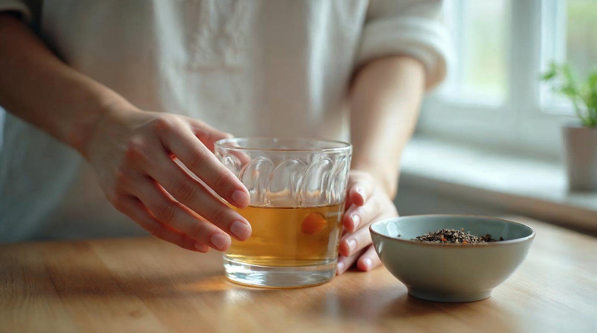
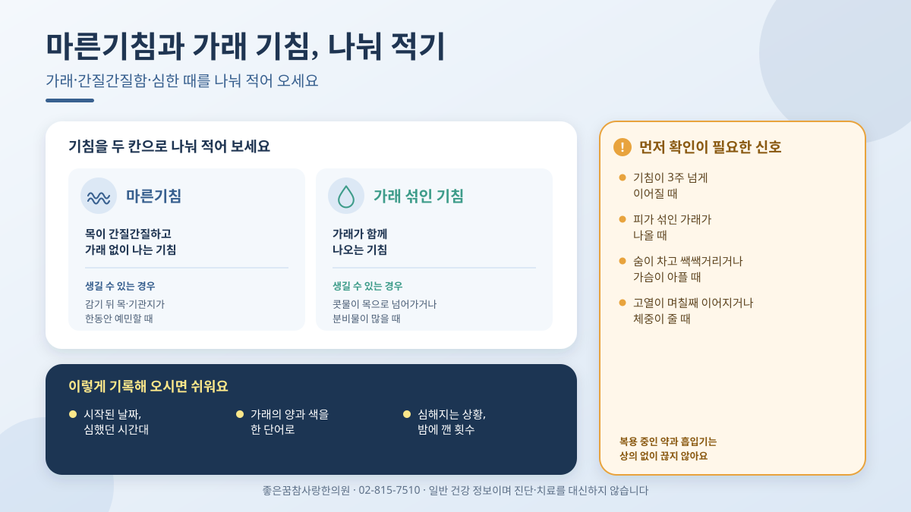

이종호 한의사 감수좋은꿈참사랑한의원 대표원장 (한의사 면허번호 19769)발행 2026-11-23 · 수정 2026-11-26
이 글의 차례
- 마른기침과 가래 섞인 기침, 이렇게 나눠 보세요
- 왜 이런 불편이 생길 수 있나요
- 왜 감기가 나은 뒤에도 기침만 남을까요?
- 비슷해 보여도 따로 살펴야 하는 경우는요?
- 가래의 색과 양은 어떻게 적으면 될까요?
- 목을 많이 쓰는 분은 무엇을 더 챙기면 좋을까요?
- 먼저 이렇게 여쭙니다
- 예를 들면 이런 상황입니다
- 스스로 점검해 보세요
- 일상에서 먼저 해 볼 수 있는 것
- 밤 기침은 잠자리에서 어떻게 줄여 볼까요?
- 한의원에서 함께 살필 수 있는 경우
- 첫 방문은 이렇게 진행됩니다
- 침과 한약은 어떤 때 이야기하나요?
- 다시 오시면 무엇을 여쭙나요?
- 얼마나 지켜보고 언제 상담할까요
- 이렇게 기록해 오시면 상담이 쉬워집니다
- 이런 증상은 먼저 확인이 필요합니다
기침이 오래가면 어떤 기침인지 설명하기가 막막해집니다. 가래가 나오는지, 목이 간질간질해서 나는지, 언제 심해지는지를 나눠 적어 오시면 진료실에서 이야기가 훨씬 정확해집니다.
누우면 잦아드는가 싶던 기침이 다시 시작되고, 옆 사람이 깰까 봐 이불 속에서 기침을 참는 밤이 있습니다. 출근길 지하철에서 기침이 터질까 봐 마음 졸이는 아침도 있지요.
진료실에서 기침 이야기를 들을 때 저는 기침하고 나면 뭔가 나오는지, 나오는 것 없이 목만 따끔한지부터 여쭙습니다. 이 질문 하나로 마른기침과 가래 섞인 기침이 대략 나뉘고, 그다음 여쭐 질문이 정해집니다.
마른기침과 가래 섞인 기침, 이렇게 나눠 보세요
- 마른기침: 목이 간질간질하거나 칼칼해서 나오는 기침입니다. "콜록콜록" 짧고 가볍게 이어지며, 기침을 해도 나오는 것이 없고 목만 따끔하다고 하십니다.
- 가래 섞인 기침: 가슴이나 목 깊은 곳에 무언가 걸린 느낌이 있고, 기침을 하면 가래가 올라옵니다. 소리가 묵직하고 "그르렁" 하는 느낌이 함께 있기도 합니다.
- 마른기침은 찬 공기, 말하기, 웃기처럼 자극이 있을 때 갑자기 터지는 경우가 많고, 가래 섞인 기침은 아침에 일어났을 때 몰려 나오는 경우가 많습니다.
말로 옮기면 마른기침은 "목이 간지러워서 기침이 나요", 가래 섞인 기침은 "가래가 끓어서 뱉어야 시원해요"에 가깝습니다. 어느 쪽인지 헷갈린다면 기침 뒤 휴지에 무엇이 묻어나는지 며칠만 살펴보세요.
처음에는 가래가 있다가 며칠 뒤 마른기침만 남는 식으로 바뀌는 경우도 흔합니다. 그렇다면 언제부터 바뀌었는지 날짜를 적어 주시면 흐름을 읽는 데 큰 도움이 됩니다.
두 가지가 섞여 있다면 어느 쪽이 더 자주인지, 하루 중 언제 어느 쪽인지만 알려 주셔도 충분합니다.
왜 이런 불편이 생길 수 있나요
- 감기가 지난 뒤에도 목과 기관지가 한동안 예민해 마른기침이 이어지는 경우가 있습니다.
- 가래 섞인 기침은 콧물이 목으로 넘어가거나 기관지에 분비물이 많을 때 생기기도 합니다.
- 건조한 공기, 찬 공기, 담배 연기, 말을 많이 하는 일은 기침을 자극할 수 있습니다.
- 속쓰림이 있는 분은 위산이 올라와 기침이 나는 경우도 있습니다.
- 기침을 오래 하면 목이 더 예민해져 작은 자극에도 기침이 이어지는 경우가 있습니다.
조금 더 풀어 보면, 기침은 목과 기관지에 들어온 자극이나 분비물을 밖으로 내보내려는 몸의 반응입니다. 가래 섞인 기침은 분비물을 내보내는 쪽에 가깝고, 마른기침은 내보낼 것 없이 예민해진 목이 반응하는 쪽에 가깝습니다.
왜 감기가 나은 뒤에도 기침만 남을까요?
감기를 앓는 동안 목과 기관지 안쪽이 자극을 받아 예민해지면, 열과 콧물이 가라앉은 뒤에도 한동안 찬 공기나 말하기 같은 작은 자극에 기침이 터지기 쉽습니다. 몇 주에 걸쳐 조금씩 줄어드는 경우가 많습니다.
이 시기에 기침을 참지 못하고 세게 하면 목이 더 자극을 받아 다시 기침이 나는 고리가 생기기도 합니다. 기침이 나오려 할 때 물을 한 모금 마시거나, 침을 삼키고 코로 천천히 숨을 쉬어 보면 고리를 조금 늦출 수 있습니다.
기침이 시작된 날짜는 달력에 표시해 두시길 권합니다. 언제 시작됐는지가 분명해야 감기 뒤 남은 기침인지, 다른 이유를 살펴야 하는지 가늠하기 쉽습니다.
기침이 오래가면 배와 옆구리 근육이 당기거나, 머리가 울리거나, 잠이 부족해 낮에 지치는 일이 함께 오기도 합니다. 이런 불편도 기침과 함께 말씀해 주시면 하루 생활에 얼마나 영향을 주는지 가늠하는 데 도움이 됩니다.
비슷해 보여도 따로 살펴야 하는 경우는요?
- 숨쉴 때 쌕쌕거리는 소리가 나거나 밤·새벽 기침이 유난히 심하다면 기관지 쪽 확인이 필요할 수 있어 내과나 호흡기 진료를 권합니다.
- 아침마다 목을 가다듬고 가래를 뱉는데 코를 풀면 비슷한 것이 나온다면 코에서 넘어가는 쪽 이야기에 가깝습니다.
- 식사 뒤나 누웠을 때 기침이 심하고 속쓰림이나 신물이 함께 있다면 위에서 올라오는 쪽 이야기일 수 있어 함께 여쭙니다.
- 혈압약 가운데 일부는 마른기침과 함께 이야기되기도 해서, 약을 바꾼 뒤 기침이 시작됐다면 약을 스스로 끊지 마시고 처방한 의사에게 먼저 알려 주세요.
코에서 넘어가는 쪽이 의심되면 코가 막힌 것인지 콧물이 목으로 넘어가는 것인지 어떻게 구분해 말하나요?, 감기 뒤 기침만 남았다면 감기는 나았는데 기침만 몇 주째 남아 있을 때는 어떻게 살피나요?도 함께 읽어 보세요.
가래의 색과 양은 어떻게 적으면 될까요?
가래를 적을 때는 색, 양, 끈적한 정도 세 가지만 한 단어씩 적으면 충분합니다. 색은 맑음, 하양, 노랑, 초록 가운데 가까운 것을, 양은 조금·보통·많이로, 끈적함은 묽음·끈적함으로 나눠 보세요.
하루 중 언제 나오는지도 함께 적어 주세요. 아침에만 몰려 나오는지, 하루 종일 조금씩 나오는지에 따라 여쭐 질문이 달라집니다. 휴지에 묻은 모습을 사진으로 남겨 오셔도 됩니다.
색이 바뀌는 흐름도 단서가 됩니다. 감기 초기에는 맑다가 며칠 뒤 노랗게 바뀌고 다시 맑아지는 경우가 흔한데, 진한 색이 오래 이어지거나 열이 다시 오른다면 내과 확인을 먼저 권합니다.
목을 많이 쓰는 분은 무엇을 더 챙기면 좋을까요?
강의, 상담, 전화 응대처럼 하루 종일 말을 하는 일을 하시는 분은 목이 쉬면서 마른기침이 함께 오는 경우가 많습니다. 목소리를 크게 내지 않아도 되도록 마이크를 쓰거나, 말하는 중간중간 물을 한 모금씩 마시는 습관을 들여 보세요.
쉬는 시간에는 말을 아끼고, 속삭이는 소리도 목에 부담이 될 수 있어 아예 쉬어 주시는 것이 좋습니다. 퇴근 뒤 목이 칼칼하다면 따뜻한 물로 목을 축이고 그날은 통화를 줄여 보세요.
먼저 이렇게 여쭙니다
- 기침할 때 가래가 나오나요, 목만 간질간질한가요?
- 기침이 시작된 지 얼마나 되었나요?
- 밤, 새벽, 아침, 말을 많이 할 때 중 언제 심한가요?
- 숨이 차거나 쌕쌕거리는 소리가 나나요?
- 담배를 피우시거나 주변에 흡연자가 있나요?
예를 들면 이런 상황입니다
- 예를 들어 감기를 앓은 뒤 열은 내렸는데, 찬 바람을 쐬거나 전화 통화를 오래 하면 목이 간질간질하며 기침이 멈추지 않는 경우는 마른기침 쪽입니다. 기침이 터진 상황을 적어 두시면 됩니다.
- 예를 들어 아침에 일어나면 목 깊은 곳에 가래가 걸려 몇 번 기침을 해야 시원해지는 경우는 가래 섞인 기침 쪽입니다. 가래의 색과 양, 코에서도 나오는지 함께 적어 주세요.
- 예를 들어 늦게 저녁을 먹고 누우면 기침이 시작되고 목에 신물이 넘어오는 느낌이 드는 경우는 식사와 기침이 이어진 모습일 수 있습니다. 저녁 시각과 누운 시각을 함께 적어 주세요.
스스로 점검해 보세요
- 기침을 해도 나오는 것이 없고 목만 따끔하다.
- 찬 공기, 말하기, 웃기에 기침이 갑자기 터진다.
- 아침에 가래가 몰려 나오고, 뱉고 나면 시원하다.
- 코를 풀면 목에서 나오는 것과 비슷한 것이 나온다.
- 누우면 기침이 심해지고 속쓰림이 함께 있다.
- 기침 때문에 밤에 두 번 넘게 깬다.
첫째·둘째는 마른기침, 셋째·넷째는 가래 섞인 기침 쪽 단서입니다. 다섯째는 식사와의 관계, 여섯째는 잠과의 관계를 함께 살펴야 한다는 신호여서 해당한다면 꼭 말씀해 주세요.

일상에서 먼저 해 볼 수 있는 것
- 미지근한 물을 자주 조금씩 마시기
- 실내 습도를 적당히 유지하기
- 찬 공기 속에서는 마스크 쓰기
- 말을 많이 한 날은 목을 쉬게 하기
- 밤 기침이 심하면 늦은 식사 뒤 바로 눕지 않기
예를 들어 밤에만 마른기침이 심하다면 그날 저녁을 먹은 시각과 방의 습도를 적고, 낮에 말을 많이 한 날 심하다면 말한 시간과 마신 물의 양을 함께 적어 보세요.
마른기침 쪽이라면 목을 촉촉하게 지키는 것이 먼저입니다. 미지근한 물을 자주 마시고, 잠들기 전 따뜻한 물로 샤워하며 김을 쐬어 보세요. 가래 쪽이라면 물을 충분히 마셔 가래를 묽게 하고, 아침에 일어나 천천히 몇 번 기침해 뱉어 내 보세요.
목캔디나 따뜻한 차로 목을 달래는 분도 많은데, 그때 잠깐 덜했는지, 금세 다시 시작됐는지도 적어 두시면 기침의 성격을 읽는 데 보탬이 됩니다.
밤 기침은 잠자리에서 어떻게 줄여 볼까요?
밤에 기침이 심하다면 먼저 침실의 공기를 살펴보세요. 난방으로 방이 건조해지면 목이 마르면서 마른기침이 잦아지기 쉬워, 젖은 수건을 걸어 두거나 가습기를 깨끗하게 관리하며 써 보시길 권합니다.
베개를 조금 높이는 것도 목 뒤로 넘어가는 분비물이나 위에서 올라오는 느낌을 덜어 보는 방법이 될 수 있습니다. 저녁 식사는 잠들기 세 시간 전쯤 마치고, 잠자리 옆에 미지근한 물 한 컵을 두어 보세요.
담배를 피우신다면 잠들기 전 흡연은 밤 기침을 키우기 쉽습니다. 가족 가운데 흡연자가 있다면 실내 흡연을 피하고, 옷에 밴 연기도 기침을 자극할 수 있어 침실에 들어오기 전 갈아입는 것이 도움이 됩니다.
한의원에서 함께 살필 수 있는 경우
- 감기가 지난 뒤 목이 예민해 마른기침이 이어지는 경우 생활 환경과 목의 건조함을 함께 살핍니다.
- 말을 많이 한 날 기침과 목 쉼이 심해지는 경우 목 사용 습관과 휴식을 함께 살핍니다.
- 밤 기침 때문에 잠을 설치는 경우 잠자리 환경과 잠의 모양을 함께 살핍니다.
좋은꿈참사랑한의원에서는 모든 분의 맥을 먼저 짚으며 기침의 모양과 생활 환경을 듣고, 필요하다고 판단될 때 설진을 더해 몸의 상태를 살핀 뒤, 상태에 맞춰 침이나 한약 상담 등을 정합니다. 기침이 오래되었다면 흉부 검사 같은 확인이 먼저 필요한지도 함께 말씀드립니다.
첫 방문은 이렇게 진행됩니다
- 맥부터 짚기: 모든 분의 맥을 먼저 짚고, 짚는 동안에도 마른기침인지 가래 섞인 기침인지, 언제 시작됐고 하루 중 언제 심한지 여쭙습니다. 필요하다고 판단될 때 혀도 함께 봅니다.
- 생활 함께 보기: 습도, 담배 연기, 말하는 시간, 저녁 식사 시각처럼 기침을 자극하는 조건을 기록과 함께 봅니다. 녹음해 오신 기침 소리가 있다면 같이 들어 봅니다.
- 방향 정하기: 상태에 맞춰 침이나 한약 상담을 정합니다. 한약은 지금 드시는 약을 먼저 확인한 뒤 이야기하고, 임신 중이시면 먼저 알려 주세요.
침과 한약은 어떤 때 이야기하나요?
생활 속 자극을 줄이는 것이 출발점이지만, 그래도 기침이 오래 남아 잠과 일을 흔들거나 몸이 차고 찬 공기에 유난히 예민한 분은 침이나 한약을 함께 상의합니다. 어느 쪽을 쓸지는 맥과 혀, 기록에서 보이는 흐름을 보고 정합니다.
같은 마른기침이라도 목이 건조하고 열감이 있는 분, 몸이 차고 찬 공기에 기침이 터지는 분, 피로가 쌓일수록 심해지는 분은 살피는 방향이 다릅니다. 그래서 기침과 함께 잠, 소화, 몸의 온기도 차례로 여쭙습니다.
저는 잘 먹고, 잘 싸고, 잘 자고, 마음 편하고, 몸 따뜻하게, 이 다섯 가지를 몸이 회복하는 바탕으로 봅니다. 밤기침이 잠을 깨우면 '잘 자고'가 흔들리고, 찬 공기에 터지는 기침이라면 '몸 따뜻하게'와 이어져 있을 수 있습니다. 기침만 따로 떼어 보지 않으려는 이유입니다.
다시 오시면 무엇을 여쭙나요?
두 번째 진료부터는 기침 때문에 깬 횟수가 줄었는지, 기침이 터지는 상황이 바뀌었는지, 가래의 양과 색이 달라졌는지부터 여쭙니다. 하루 중 심한 시간대가 옮겨 갔다면 그것도 중요한 변화입니다.
함께 정한 습도 맞추기나 물 마시기, 목 쉬기를 해 보셨는지도 이어서 여쭙니다. 일 때문에 말을 줄이기 어려웠다면 그 상황을 말씀해 주세요. 하던 일을 이어 가면서 목을 덜 쓰는 방법을 함께 찾아봅니다.
얼마나 지켜보고 언제 상담할까요
- 물 마시기, 습도 맞추기, 목 쉬기를 1~2주 해 보며 기침이 터진 횟수와 깬 횟수를 적어 봅니다.
- 감기 뒤 남은 기침이 조금씩 줄고 있다면 기록을 이어 가며 지켜볼 수 있는 경우가 많습니다.
- 줄지 않고 오히려 늘거나 잠을 자주 설친다면 기다리지 말고 진료를 받아 보세요.
이렇게 기록해 오시면 상담이 쉬워집니다
- 기침이 시작된 날짜(달력에 표시)
- 하루 중 심했던 시간대
- 가래가 있다면 양과 색을 한 단어로
- 실내 습도, 찬 공기, 담배 연기 등 심해지는 상황과 복용 중인 약
- 밤에 기침 때문에 깬 횟수
기록 한 줄은 "토요일 새벽 3시, 마른기침으로 깸, 10분쯤 이어짐, 방 건조함, 전날 늦은 저녁"처럼 때, 종류, 이어진 시간, 환경만 적으면 충분합니다. 가래가 있었다면 "아침, 가래 조금, 하얀색"처럼 덧붙여 주세요.
기침의 횟수를 세기 어렵다면 "가끔, 자주, 멈추지 않음" 세 단어 가운데 하나를 고르셔도 됩니다. 기침이 한 번 시작되면 몇 분쯤 이어지는지, 기침 끝에 구역질이 나거나 숨이 가빠지는지도 함께 적어 주시면 기침의 세기를 전하는 데 도움이 됩니다.
녹음은 기침이 가장 심한 때 10초 정도면 충분합니다. 마른기침과 가래 섞인 기침은 소리만으로도 느낌이 꽤 달라서, 진료실에서 설명하기 어려운 부분을 잘 전해 줍니다.
기침이 길어지면 몸만큼 마음도 지칩니다. 밤마다 깨면서도 낮에는 할 일을 다 해 오셨을 테니까요. 다음에 오시면 기침이 하루 중 언제 가장 심했는지, 가래가 있었는지부터 여쭙겠습니다.
이런 증상은 먼저 확인이 필요합니다
- 숨쉬기 힘들어하거나 입술이 파래지는 경우(아이 포함)
- 피가 섞인 가래가 나오거나 기침이 3주 넘게 이어지는 경우
이런 신호가 있으면 한의원보다 가까운 병원이나 응급실을 먼저 찾으세요.

여쭙는 것
- 기침할 때 가래가 나오나요, 목만 간질간질한가요?
- 기침이 시작된 지 얼마나 되었나요?
- 밤, 새벽, 아침, 말을 많이 할 때 중 언제 심한가요?
생활에서 해 볼 것
- 미지근한 물을 자주 조금씩 마시기
- 실내 습도를 적당히 유지하기
- 찬 공기 속에서는 마스크 쓰기
한의원에서 함께 살필 것
- 감기가 지난 뒤 목이 예민해 마른기침이 이어지는 경우 생활 환경과 목의 건조함을 함…
- 말을 많이 한 날 기침과 목 쉼이 심해지는 경우 목 사용 습관과 휴식을 함께 살핍니다.
- 밤 기침 때문에 잠을 설치는 경우 잠자리 환경과 잠의 모양을 함께 살핍니다.
먼저 확인이 필요한 신호
- 숨쉬기 힘들어하거나 입술이 파래지는 경우(아이 포함)
- 피가 섞인 가래가 나오거나 기침이 3주 넘게 이어지는 경우
한눈에 보는 표
| 구분 | 핵심 |
|---|---|
| 여쭙는 것 | 기침할 때 가래가 나오나요, 목만 간질간질한가요? 기침이 시작된 지 얼마나 되었나요? |
| 생활에서 해 볼 것 | 미지근한 물을 자주 조금씩 마시기 실내 습도를 적당히 유지하기 |
| 한의원에서 함께 살필 것 | 감기가 지난 뒤 목이 예민해 마른기침이 이어지는 경우 생활 환경과 목의 건조함을 함께 살핍니다. 말을 많이 한 날 기침과 목 쉼이 심해지는 경우 목 사용 습관과 휴식을 함께 살핍니다. |
| 먼저 확인이 필요한 신호 | 숨쉬기 힘들어하거나 입술이 파래지는 경우(아이 포함) 피가 섞인 가래가 나오거나 기침이 3주 넘게 이어지는 경우 |
자주 묻는 질문
기침 소리를 녹음해 가도 되나요?
네. 짧게 녹음해 오시면 기침의 모양을 전달하는 데 도움이 됩니다.
흉부 엑스레이를 찍었으면 결과를 가져가야 하나요?
네. 최근 검사 결과가 있다면 함께 보여 주세요.
기침약을 먹고 있어도 진료를 받을 수 있나요?
네. 드시는 약 이름을 알려 주시면 확인한 뒤 이야기를 이어 갑니다. 약은 처방한 의사와 상의 없이 끊지 않습니다.
아이 기침도 같은 방법으로 적으면 되나요?
네. 아이는 기침 때문에 깨는지, 숨쉴 때 쌕쌕거리는지를 보호자가 함께 적어 오시면 됩니다. 숨이 가빠 보이면 소아청소년과 진료를 먼저 받아 주세요.
좋은꿈참사랑한의원은 재진 때 지난번 이야기부터 이어서 여쭙니다. 진료시간과 예약은 오시는 길에서 확인하세요.
어디서 상담받을 수 있나요?
좋은꿈참사랑한의원은 서울 동작구 만양로2길 2 신성빌딩 3층·5층(서울 동작구 상도동, 7호선 상도역 3번 출구 근처)에 있습니다. 한의사 3명(이종호 대표원장, 조영기 수석진료원장, 정원영 진료원장)이 진료합니다. 진료시간은 평일 09:30~20:00(점심 13:00~14:00), 토·일·공휴일 09:30~15:00이며, 방문 전 전화로 확인을 권합니다. 예약은 네이버 예약, 카카오톡 상담, 전화 02-815-7510로 받습니다.
이 글은 일반적인 건강 정보이며 개인의 진단이나 치료를 대신하지 않습니다. 증상이 있거나 복용 중인 약이 있다면 진료를 통해 확인하세요. 치료 효과는 개인마다 다를 수 있습니다.
작성 기준: 일반적으로 알려져 있는 건강 정보를 참고해 정리했습니다(대표원장 감수). 증상 기록은 1~2주 동안 하루 1회, 비슷한 시간에 적어 오시면 지난 상태와 비교하기 쉽습니다.